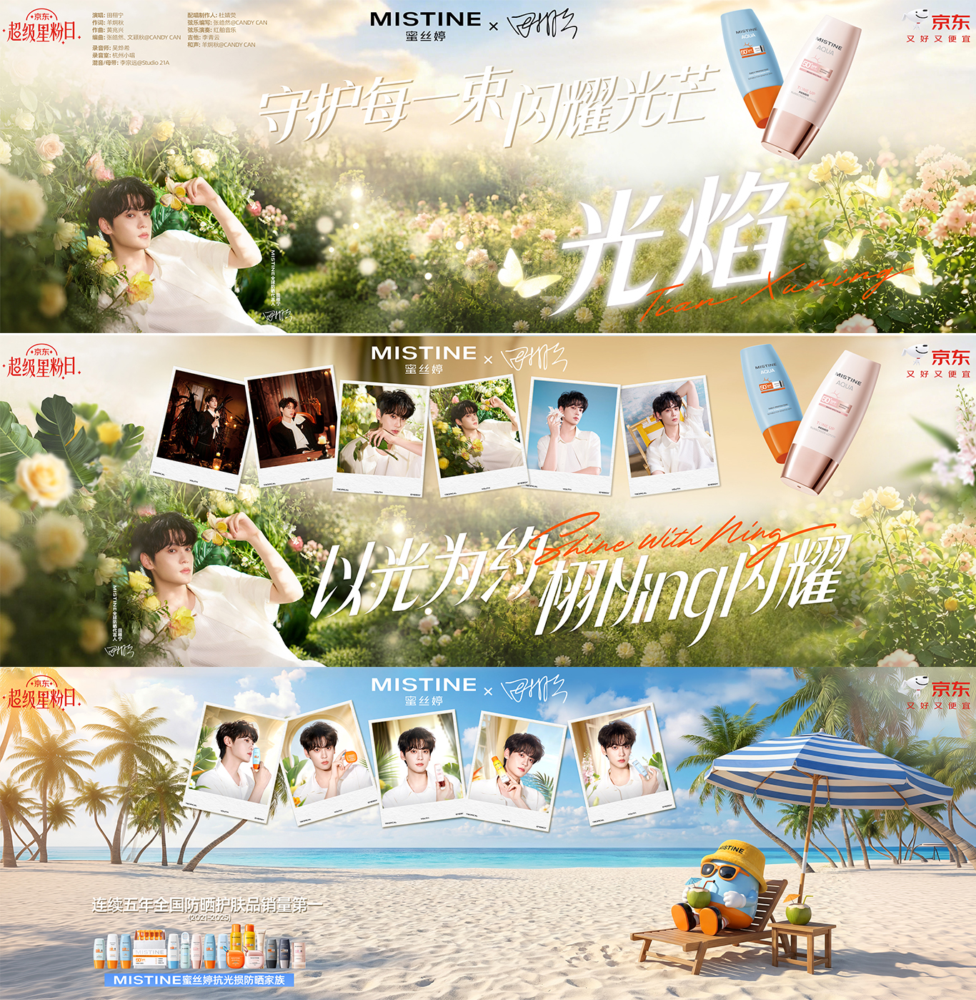
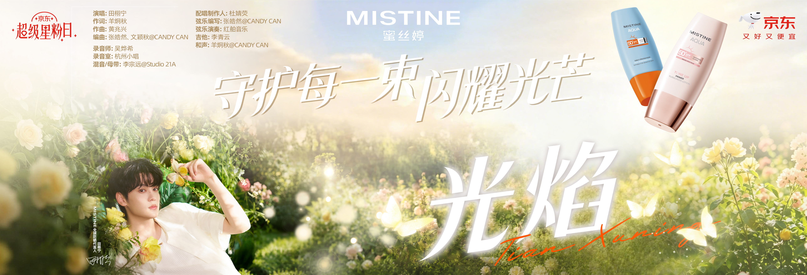
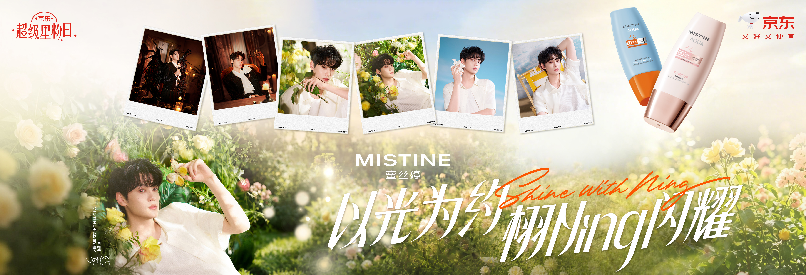
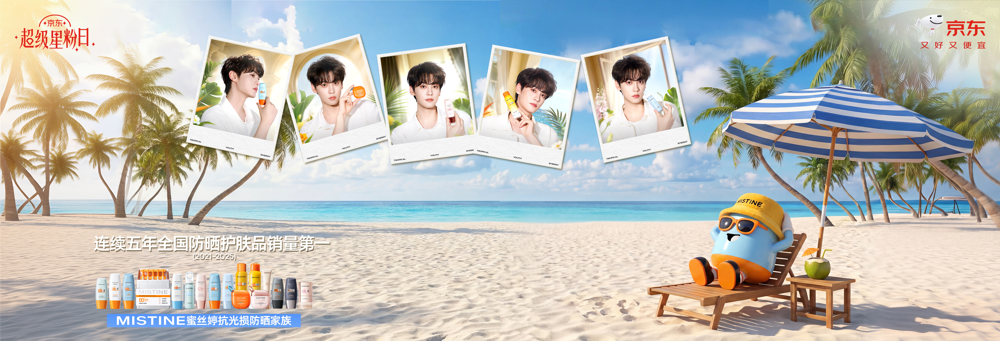
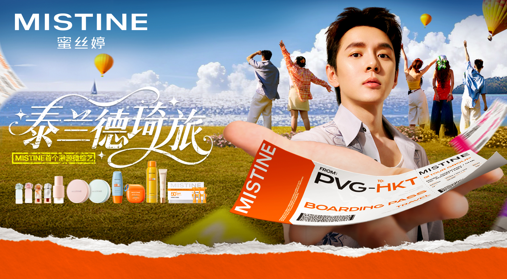
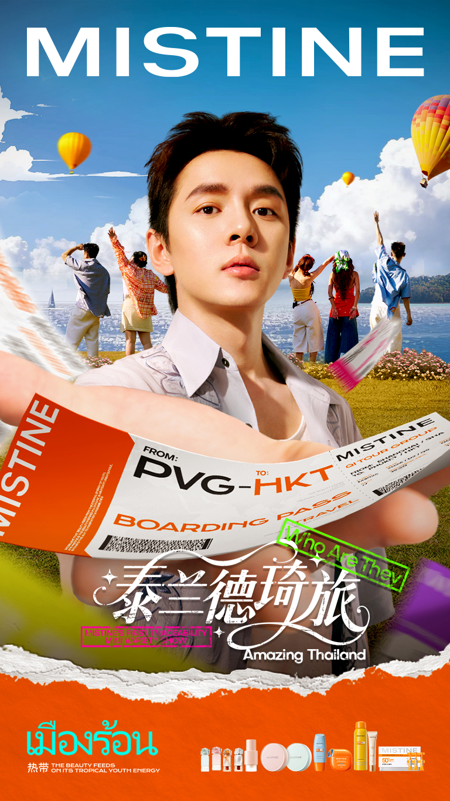

BEAUTY / CAMPAIGN VISUALS / MOTION
Made for
the spotlight.
A collection of Mistine campaign materials across large-screen visuals, format adaptations and motion.
LARGE-SCREEN VISUALS
A brighter
frame.
Campaign visuals developed for a wide-screen format.




CAMPAIGN ADAPTATIONS
Across
formats.
A travel-themed campaign adapted for mobile and elevator screens.


MOTION
In motion.
Three animated pieces from the Mistine collection.